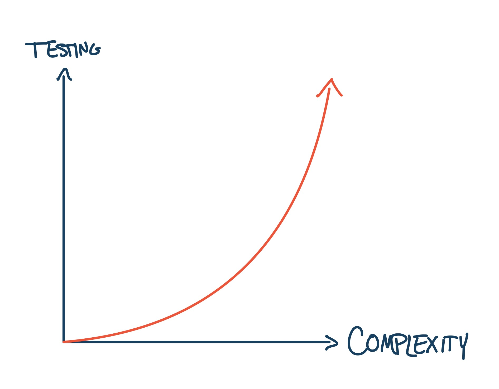

Airplane Certification and its Effects on Digital Safety System Design
Since we are talking about automatic safety systems, then we are talking about a system which will take control of an airplane. It turns out that it doesn't make a lot of sense to ask the pilot whether a safety system can take control, because the factors that have led to the dangerous condition are probably still affecting the pilot. So, if the pilot is disoriented or even temporarily incapacitated, asking them to approve an automatic maneuver is probably not the best idea. Or, if it is an emergency situation, the pilot is probably busy dealing with the situation and adding one more button to push or one more decision to make will be counter productive. So, we must adhere to the design principle that we can take control of the aircraft without the pilots immediate permission. This causes all sorts of headaches for the Federal Aviation Administration (FAA), which is in charge of certifying that an aircraft and airspace is safe as possible. The problem is that the current air transportation system is built around the concept that the pilot-in-command has the ultimate responsibility for safety for the aircraft they are flying. So, if we let a computerized system fly the airplane without the pilot's explicit permission, then some of this authority is taken away.
Let me be clear, a digital safety system would not be the only automatic system on an aircraft. Modern aircraft have all kinds of automatic systems to check the avionics, to control the on board environment, and even to control the engines. These systems all must go through a process which evaluates what effect a failure would have on the airplane. Would it be catastrophic? Would it be annoying? What's the worst case outcome? For those systems which can cause a catastrophic outcome, the FAA requires the highest level of "design assurance" (Design Assurance Level A (DAL A)). DAL A systems must be checked with excruciating detail in order to be approved for flight, and because the amount of work required to check a system goes up exponentially with the with the system complexity, the systems should be made as simple as possible.

For a digital safety system, the way this is done is to restrict each safety system to only one piloting function at a time. There are many things that a pilot must do to make sure that the aircraft does not crash. They must simultaneously make sure they don't crash into another aircraft, make sure they don't crash into the ground, make sure they don't stall, they have to avoid really bad weather, etc. In addition, they have to do all of this safety planning and decision making while doing the normal and useful job of flying. We call each of these safety planning and decision tasks "safety functions". Each safety function is concerned with only one type of threat to the aircraft. So, if we are trying to make each safety system as simple as possible, then we want to restrict each safety system to only be concerned with one safety function. For the case of the Ground Collision Avoidance System (GCAS), the piloting function is solely to avoid hitting the ground.